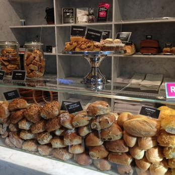
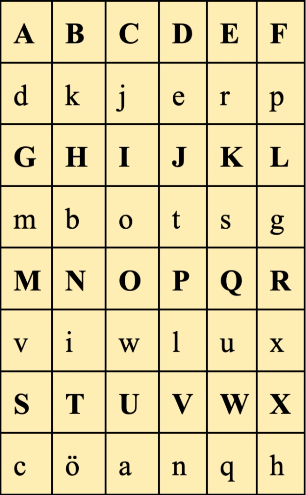

DEL 6
Avslöjanden

När hon klev in genom dörren möttes hon av doften av kaffe och nybakat bröd.
Lokalen var ljus, med stora fönster ut mot gatan, men just nu kändes allt klaustrofobiskt trångt. Vid ett av borden vid fönstret satt Vera elegant som alltid, med en cappuccino framför sig och mobilen i handen. Hennes långa fingrar trummade mot skärmen som om hon väntade på något.
Mia drog ett djupt andetag och gick fram.
"Vera?" sa hon, röstens darrning bara nätt och jämnt hörbar.

Vera
Vera lyfte blicken, först med en förvånad min, sedan en snabb mask av vänlighet som gled över ansiktet.
"Ja?" sa hon, som om hon inte alls var säker på vem Mia var.
Mia drog fram stolen mittemot och satte sig utan att vänta på inbjudan. Hon kände Camillas hand nästan som ett spöke på sin arm som en påminnelse om vad som stod på spel.
"Jag vet vad du har gjort," sa Mia lågt, tillräckligt för att bara Vera skulle höra.
Vera stelnade till, handen på koppen frös mitt i rörelsen.
"Jag vet om Jonathan," fortsatte Mia, och lade försiktigt, nästan respektfullt, den hopvikta lappen med hjärtat på bordet mellan dem.
För några sekunder sa ingen något. Vera stirrade på lappen som om den vore något farligt, något brännande. Sedan lutade hon sig tillbaka i stolen, drog ett långsamt andetag, och ett nästan omärkligt leende lekte i mungipan.
Mia kände hur luften omkring dem tycktes vibrera. Hon behövde få ut mer.
"Camilla vet," sa Mia, låtsades hålla rösten stadig. "Allt."
Vera betraktade henne länge, som om hon vägde sina ord mycket noga.
"Det är inte så enkelt," sa Vera till slut, rösten låg och nästan sorgsen. "Men jag antar att det var ofrånkomligt."
Hon böjde sig framåt, rörelsen så diskret att ingen annan i lokalen skulle ana att något viktigt sades.
"Ni vet inte ens hälften," viskade Vera.
Vera lutade sig tillbaka igen, ögonen mörka men ansiktet lugnt. Hon svepte sitt kaffe i en enda rörelse, reste sig och samlade ihop sina saker.
"Det ni har dragit upp kommer inte gå att stoppa nu," sa hon tyst. Sedan såg hon på Mia en sista gång, en blick som varken var hotfull eller vänlig bara en konstaterande sorg. Hon vände sig om och försvann ut genom dörren.
Allt kändes plötsligt större än hon hade förstått. När dörren slog igen efter Vera blev allt tystare omkring Mia, som om ljudet från kaféet dämpats. Hon kunde inte gå tillbaka till hotellet nu direkt, inte än. Hon behövde tid och få luft för att bearbeta vad som hänt. Mia reste sig långsamt, sköt in stolen och klev ut på gatan. Hon stoppade händerna djupt ner i jackfickorna och började gå, utan någon tydlig riktning till en början. Tankarna snurrade. Vad hade Vera egentligen menat? Vilken del av historien var det de ännu inte sett? Var Camilla verkligen beredd på allt det här?
Steg för steg styrde hon ändå, omedvetet, mot Turning Torso. Den välbekanta siluetten reste sig i fjärran, en vriden skulptur av glas och stål mot himlen. Det var som en fyr i en stad där hon plötsligt inte visste vem hon kunde lita på längre.
Hon ville bara få ett ögonblick av stillhet, samla ihop bitarna av sig själv innan nästa steg.
Promenaden kändes nödvändig, som ett reningsbad.
Och kanske, hoppades hon, skulle svaren klarna när hon väl stod där.

Det finns ett hemligt ord med i Gateau. Lös ord-chiffret, sätt bokstäverna i rätt ordning och skriv in ordet.
G - __
A - __
T - __
A - __
E - __
U - __